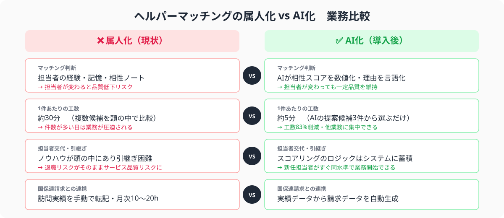
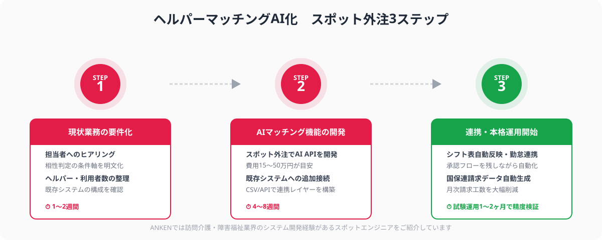

ヘルパーマッチングが属人化する3つの理由
担当者の経験・勘・手書きメモに頼っていたヘルパーと利用者の相性判定をAIスコアリングに置き換えること。性別・言語・介護スキル・エリア・過去のクレーム有無・利用者の希望条件などを数値化し、最適なヘルパー候補をシステムが自動提案する仕組みを指す。最終決定は担当者が行うハイブリッド型が主流。
訪問介護や障害福祉サービス事業所では、ヘルパーと利用者のマッチングは事業継続の根幹です。しかし多くの事業所で、この重要業務が特定の担当者の頭の中だけに存在する「属人的ノウハウ」として管理されています。その背景には3つの構造的な理由があります。
①条件軸が複雑で言語化しにくい：利用者ごとに「男性ヘルパーは不可」「ペット（猫）への対応が必要」「会話が好きな方を希望」など、標準化しにくい細かい条件が多数存在します。これらはシステムに入力しにくく、担当者の記憶に頼りがちになります。
②ヘルパーの入れ替わりが激しい：訪問介護・障害福祉業界はスタッフの流動性が高く、新人ヘルパーの特性や対応可否を管理者が把握しきれないケースが多発します。ベテラン担当者が退職した途端、マッチングの質が落ちる事故が起きやすい構造です。
③既存システムが対応していない：多くの介護ソフト（カイポケ・ファーストケア等）はシフト管理・国保連請求には対応していますが、ヘルパー×利用者の相性スコアリング機能は持っていません。結果として担当者がExcelや紙の「相性ノート」を並行運用する二重管理が常態化します。

AIマッチングで解消できる3つの課題
AIマッチングを導入することで、上記の属人化問題に加えて、事業所運営における3つの具体的な課題を解消できます。
課題1｜マッチング品質の担当者依存からの脱却
AIが過去の訪問実績・クレーム記録・ヘルパー評価スコアを学習し、担当者が変わっても一定品質のマッチング提案を継続できます。新任担当者への引き継ぎコストも大幅に減少します。
課題2｜マッチング工数の削減（1件あたり30分→5分）
担当者が複数のヘルパー候補を頭の中で比較検討する作業をAIが代替します。AIが提示した上位3候補から選ぶだけでよくなり、1件あたりのマッチング工数を30分から5分程度に短縮できます。
課題3｜利用者・家族の満足度向上
「なんとなく合わない」という理由で生じるサービス解約を防ぐには、相性の見える化が有効です。AIが理由を言語化して提示することで、担当者が利用者・家族に説明しやすくなり、変更依頼への対応も迅速になります。
3ステップでAIマッチング機能を構築する方法
既存の業務管理システムへのAIスコアリング機能の追加は、スポット外注を活用することで情シス担当者がいない中小事業所でも現実的な費用・期間で実現できます。以下の3ステップで進めましょう。
ステップ1｜現状の属人的マッチング業務を要件化する
最初のステップは「今誰が、何を判断材料にして、どのようにマッチングを決めているか」を言語化・数値化することです。このステップをしっかり行うかどうかで、その後のスポット外注依頼の精度と開発品質が大きく変わります。
具体的には、以下の情報を整理した「要件シート」を1〜2枚で作成します。
- マッチング条件の軸：性別・言語対応・保有資格・エリア（移動時間）・過去のクレーム有無・好み（会話が好き/静かな方が良い等）
- ヘルパー情報：登録ヘルパー数、平均稼働件数、スキルレベルの分布
- 利用者情報：利用者数、サービス種別（訪問介護・重度訪問介護・居宅介護等）、1日の平均マッチング件数
- 既存システム構成：使用している介護ソフト名・バージョン、データベースの種類（MySQL・Accessなど）、APIの有無
ステップ2｜AIマッチング機能をスポット外注で開発・既存システムに追加する
要件シートができたら、スポットエンジニアへの依頼に移ります。重要なのは「新しいシステムをゼロから作る」ではなく、「既存システムにAIスコアリング機能を追加する」として発注することです。
技術的には以下の構成が一般的です。
- AIスコアリングAPI：ヘルパーIDと利用者IDを渡すと相性スコア（0〜100点）と推奨理由テキストを返すAPIを新規開発。Pythonで実装しクラウド（AWS Lambda等）にデプロイ。
- 既存システムとの接続：現行の介護ソフトのデータをCSV・APIまたはDB直接参照でAI APIに渡す連携レイヤーを構築。
- 管理画面のUI改修：担当者がマッチング提案を確認・承認できる画面を既存の操作画面に追加。
スポット外注での依頼では、「訪問介護・障害福祉のシステム開発経験があるエンジニア」を指名することが品質の近道です。介護報酬の請求体系（国保連の伝送仕様）を知らないエンジニアへの依頼は後工程で大きな手戻りが発生するリスクがあります。

ステップ3｜シフト調整・勤怠・国保連請求と連携して本格運用を開始する
AIマッチング機能が動くようになったら、シフト表への反映と国保連への請求データ生成を連携させることで業務の自動化範囲を最大化します。
シフト連携：AIが提案したマッチング結果を担当者が承認すると自動的にシフト表へ転記する仕組みを構築します。月のシフト作成工数（平均8〜15時間/月）を半減以下に削減できます。
勤怠・実績記録連携：ヘルパーのスマートフォンからの訪問開始・終了打刻を実績記録と自動連携することで、紙の訪問記録への転記をなくします。
国保連請求連携：訪問実績データから国保連への電子請求データ（1レコード形式）を自動生成します。月次の請求業務（平均10〜20時間/月）のほぼ全自動化が実現します。
試験運用は利用者20〜30名・ヘルパー10〜15名程度の規模から始め、1〜2ヶ月でAIの提案精度と現場担当者の使いやすさを確認してから全事業所展開に移行するのがリスクの少ない進め方です。
スポット外注の費用感・期間の目安
ヘルパーマッチングAI化のスポット外注費用は、既存システムの状態と必要な機能範囲によって大きく変わります。以下の3パターンを参考にしてください。
パターンA｜既存システムへのAIスコアリング機能追加のみ
費用：15〜30万円 期間：4〜6週間
既存の介護ソフトはそのまま使い、AIスコアリングAPIと簡易な承認UIだけを追加する最小構成。既存システムにAPIが用意されている場合に有効。
パターンB｜シフト・勤怠・請求連携まで含む中規模開発
費用：30〜60万円 期間：6〜10週間
AIマッチングにシフト自動反映・国保連請求データ生成を組み合わせた構成。月次の業務工数削減効果が最も大きく、ROIが高い。
パターンC｜業務管理システムの一体新規開発
費用：50〜120万円 期間：2〜4ヶ月
現在の管理ツールが古く機能不足の場合に、AIマッチング機能込みで業務管理システム全体を刷新するケース。初期投資は大きいが属人化解消効果が最も高い。
ANKENでは介護・福祉業界のシステム開発経験があるスポットエンジニアをマッチングしています。国保連の請求仕様・介護保険制度の知識を持ったエンジニアへの依頼が可能なため、業界未経験者への外注で生じがちな手戻りを最小化できます。
よくある質問
- Q. 訪問介護のヘルパーマッチングAI化にかかる費用はどのくらいですか？
- A. 既存システムへのAIスコアリング機能追加で15〜30万円・4〜6週間、新規業務管理システムの一体開発の場合は30〜80万円・2〜4ヶ月が目安です。
- Q. AIマッチングは最終的な配置判断も自動で行いますか？
- A. AIはあくまで相性スコアと推奨候補を提示します。最終判断は担当者が承認する設計が一般的で、段階的に自動化範囲を広げることが推奨されます。
- Q. 国保連への請求データとの連携はスポット外注で依頼できますか？
- A. できます。訪問介護・障害福祉分野のシステム開発経験があるスポットエンジニアに、国保連データ形式への出力機能を含めて依頼するのが最も効率的です。
まとめ
訪問介護・障害福祉事業所のヘルパーマッチングAI化は、①現状の属人的マッチング業務の要件化→②AIスコアリング機能をスポット外注で開発・既存システムに追加→③シフト・勤怠・国保連請求と連携して本格運用、という3ステップで費用15〜50万円・期間4〜8週間から実現できます。
特定の担当者の退職でマッチング品質が落ちるリスクを排除し、1件あたりのマッチング工数を30分から5分に削減、月次のシフト作成・請求業務の半自動化まで組み合わせることで、事業所全体の生産性を大きく底上げできます。
「まずどこから手をつければいいかわからない」「介護ソフトとの連携が難しそう」という段階でも、ANKENでは業界経験のあるスポットエンジニアが無料でご相談に応じています。